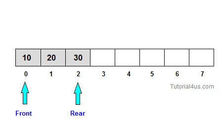

Queue is work on the principal of First-In-First-Out (FIFO), it means first entered item remove first. Queue have two end front and rear, from front you can insert element and from rear you can delete element.
A common example of queue is movie theater ticket counter, there first person who stand in front of ticket window take ticket first and remove from line and new person always stand in line from end.
Queues are used for any situation where you want to efficiently maintain a First-in-first out order on some entities. Transport and operations research where various entities are stored and held to be processed later i.e the queue performs the function of a buffer.
In a multitasking operating system, the CPU cannot run all jobs at once, so jobs must be batched up and then scheduled according to some policy. Again, a queue might be a suitable option in this case.
The basic operation that can be perform on queue are;
In queue insert any element form Rear. If you insert new element in queue value of Rear will be increased by 1.
void insert() { int item; printf("Element : "); scanf("%d",&item); if(front==(rear+1)%3) { printf("Queue is Full"); return; } if(front==-1) { rear=front=0; } else { rear=(rear+1)%3; } cque.cqueue[rear]=item; printf("Successfully Insert"); }

In queue delete an element form Front. If you delete an element from queue value of Front will be increased by 1.
void del() { int num; if(front==-1) { printf("Queue Empty"); return; } else { num=cque.cqueue[front]; printf("Deleted item : %d",num); } if(front==rear) { front=-1; } else front=(front+1)%3; }
#include<stdio.h> #include<conio.h> void insert(); void del(); void display(); struct circ { int cqueue[5]; }; struct circ cque; int rear=0,front=-1; void main() { while(1) { int num; clrscr(); printf("1.Insertion\n2.Deletion\n3.Display\n0.Exit\n"); printf("\n\nSelect Option : "); scanf("%d",&num); switch(num) { case 1: insert(); break; case 2: del(); break; case 3: display(); break; case 0: exit(0); break; default: printf("\n\n Invalid Option "); } getch(); } } void insert() { int item; printf("Element : "); scanf("%d",&item); if(front==(rear+1)%3) { printf("Queue is Full"); return; } if(front==-1) { rear=front=0; } else { rear=(rear+1)%3; } cque.cqueue[rear]=item; printf("Successfully Insert"); } void del() { int num; if(front==-1) { printf("Queue Empty"); return; } else { num=cque.cqueue[front]; printf("Deleted item : %d",num); } if(front==rear) { front=-1; } else front=(front+1)%3; } void display() { int i; if(front==-1) { printf("Queue Empty");